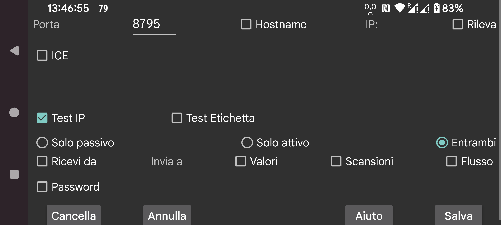

ar be de es fr hi it ja ko nl pl pt ru sv tr uk uz zh en
Specifica una connessione con un'altra istanza di Juggluco. Juggluco su un dispositivo invia tramite IP/TCP dati a un Juggluco su un altro dispositivo. Per stabilire una connessione, uno dei Juggluco deve ascoltare su una porta e l'altro deve mettersi in contatto con quella porta. La porta su cui questa istanza di Juggluco è in ascolto è stata fornita nella schermata precedente (Menu centrale sinistro->Mirror). Qui specifichi la porta con cui questa istanza di Juggluco si mette in contatto se contatta attivamente. Se questa istanza di Juggluco non può ascoltare su una porta, seleziona "Solo attivo". Se l'altro lato non può ascoltare su una porta, seleziona "Solo passivo", altrimenti lascia "Entrambi" selezionato. Il Juggluco dall'altra parte deve specificare Solo passivo se qui selezioni Solo attivo e Solo attivo se qui selezioni Solo passivo e Entrambi se qui selezioni Entrambi.
Se questa istanza di Juggluco si mette in contatto attivamente, devi specificare l'IP o gli IP che deve contattare. Se quell'host ha più IP, ne specifichi più di uno; ad esempio quando due dispositivi sono talvolta connessi tramite una rete domestica e talvolta direttamente come hotspot portatile.
ATTENZIONE: Non specificare mai gli IP di più dispositivi, in tal caso ognuno riceverà solo una parte dei dati.
hostname: Specifica un nome host invece degli IP. Questo renderà la connessione dipendente da un nameserver, quindi più lenta e influenzata da interruzioni della connessione al nameserver. Attivalo solo quando non puoi configurare un IP statico e il nome host viene assegnato automaticamente all'IP dinamico. In tutti i casi tranne 'Solo attivo', puoi selezionare 'Rileva'; in questo caso Juggluco salva il primo IP che contatta Juggluco come l'IP dell'altro lato. Verificare se il dispositivo giusto si sta mettendo in contatto si può fare in due modi: Seleziona 'Test IP' per testare l'IP. Se selezioni Test Etichetta, un contatto viene stabilito solo se entrambi i lati hanno specificato la stessa etichetta.
Seleziona ricevi da se vuoi che questa app funzioni come app mirror.
Se vuoi che questo dispositivo sia il mittente dei dati, devi specificare quali dati inviare.
Valori: dose, cibo e dati sportivi che hai specificato.
Scansioni: dati ricevuti scansionando il sensore (scansioni e cronologia per Libre2, per Libre3 solo dati necessari per accedere al sensore tramite Bluetooth).
Flusso: i dati ricevuti via Bluetooth. Per Libre3 questo include i dati della cronologia.
A volte alcuni dati sono già presenti sul dispositivo ricevente. Puoi specificare fino a quando questi dati sono presenti:
Inizio: nessun dato presente
Adesso: tutti i dati presenti
Oppure una data specifica determinata dalla posizione iniziale dello schermo.
Quando una sorgente di dati viene aggiunta a una connessione esistente, la data di inizio si applica solo alla nuova sorgente di dati. Ad esempio, se Scansioni e Flussi erano già stati inviati all'host, e ora vengono aggiunti i Valori, la data di inizio determina solo i Valori da inviare.
Nel caso in cui due dispositivi siano connessi tramite una connessione non sicura, i dati possono essere firmati e cifrati specificando la stessa password di (massimo) 16 caratteri su entrambi i lati della connessione. Seleziona Salva per salvare quanto hai specificato. Cancella cancellerà questa specifica di connessione.
QR: Crea l'altro lato della connessione scansionando un codice QR.
Nella situazione più semplice tutte le connessioni appartengono alla tua rete domestica, quindi puoi usare IP locali. Puoi anche connetterti tramite internet via Wi-Fi, in tal caso dovresti consultare il manuale del tuo modem su come inoltrare una porta esterna a un IP e porta sulla tua rete domestica.
Due smartphone connessi a internet tramite dati mobili possono connettersi direttamente l'uno all'altro, a condizione che uno dei due possa ascoltare su una porta di rete. Se nessuno dei due può (ad esempio se nessuno dei due ha un IP individuale), possono ancora comunicare tra loro tramite un terzo dispositivo. Una possibilità è eseguire Juggluco su un dispositivo Android (minimo Android 4.4) a casa connesso a internet tramite un modem. Un'altra possibilità è eseguire un programma a riga di comando appartenente a Juggluco su un computer (ad esempio il tuo PC o Amazon AWS): https://www.juggluco.nl/Juggluco/cmdline/index.html
Tutorial sul port forwarding:
https://portforward.com/how-to-port-forward/
https://stevessmarthomeguide.com/understanding-port-forwarding/
È possibile ricevere i valori del glucosio tramite Bluetooth su un dispositivo senza NFC (vedi https://www.juggluco.nl/Juggluco/mirror): Inizializza il sensore tramite NFC sul dispositivo NFC e poi invia i dati di Scansione e Flusso al dispositivo non-NFC. Successivamente inverti la connessione per i dati di Flusso e disattiva la connessione Bluetooth nel dispositivo NFC e attivala in quello non-NFC e disattiva anche "sensore via Bluetooth" nel dispositivo NFC e attivalo nel dispositivo non-NFC. Così puoi scansionare con un dispositivo e ottenere i valori del glucosio tramite Bluetooth su un altro dispositivo. Ma su tutti i dispositivi tutti i dati del sensore dovrebbero essere disponibili. Se i dispositivi si scambiano dati, dovrebbero sempre ricevere sia i dati di scansione che quelli di flusso. Quindi dovresti sempre rinviare i dati di Flusso al dispositivo NFC e i dati di scansione al dispositivo non-NFC. Altrimenti, i dati andranno fuori sincronia portando all'uso di vecchi dati di autenticazione o alla sovrascrittura di nuovi dati con dati vecchi.
I dati dei Valori sono totalmente indipendenti.
Un modo totalmente diverso di formare una connessione è ICE (Interactive Connectivity Establishment). Ti permette di formare una connessione tra due istanze di Juggluco senza configurare alcun port forwarding. Nella maggior parte dei casi due telefoni ottengono una connessione diretta senza alcun server in mezzo. In alcuni casi questo non è possibile ed è necessario un server TURN. Un server TURN può essere specificato in menu centrale sinistro→Mirror→Server TURN. In altri casi i server sono necessari solo per mettere in contatto i due telefoni. Per questo, devi specificare una "etichetta ICE" condivisa solo tra entrambi i lati della connessione, ma non usata da nessun altro utente di Juggluco. Un lato della connessione deve specificare 0 l'altro 1. Anche una etichetta deve essere condivisa tra entrambi i lati della connessione, ma questa deve solo essere unica su questi telefoni. Invece di specificare tutto qui, puoi usare menu centrale sinistro→Mirror→AutoQR per generare automaticamente una connessione e scansionare un codice QR con il telefono dall'altro lato della connessione.
È necessaria una specifica strettamente complementare su entrambi i lati della connessione. Una semplice omissione può rendere impossibile la trasmissione dei dati.
È possibile che la connessione si blocchi e debba essere reimpostata attivando o disattivando il WIFI o premendo Sync. Anche passare da una connessione solo attivo-solo passivo a entrambi o viceversa può fare la differenza.
Dovresti anche considerare il cambiamento degli IP con il cambio di connessione. Ad esempio, IP diversi devono essere usati sulla rete domestica rispetto a un hotspot portatile.